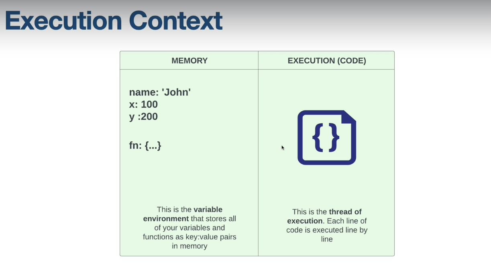

Execution Context
When you run any JavaScript, a special environment is created to handle the transformation & execution of code.
This is called the execution context. It contains the currently running code and everything that aids in
its execution.
There is a global execution context as well as a function execution context for every function invoked.

Execution Context Phases
Memory Creation Phase
- Create the global object (browser = window, Node.js = global)
- Create the 'this' object and bind it to the global object
- Setup memory heap for storing variables and function references
- Store functions and variables in global execution context and set to "undefined"
Execution Phase
- Execute code line by line
- Create a new execution context for each function call